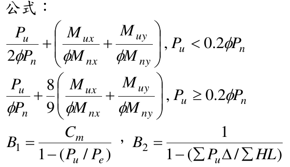
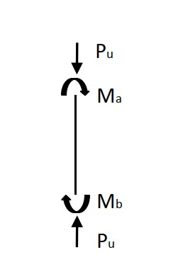
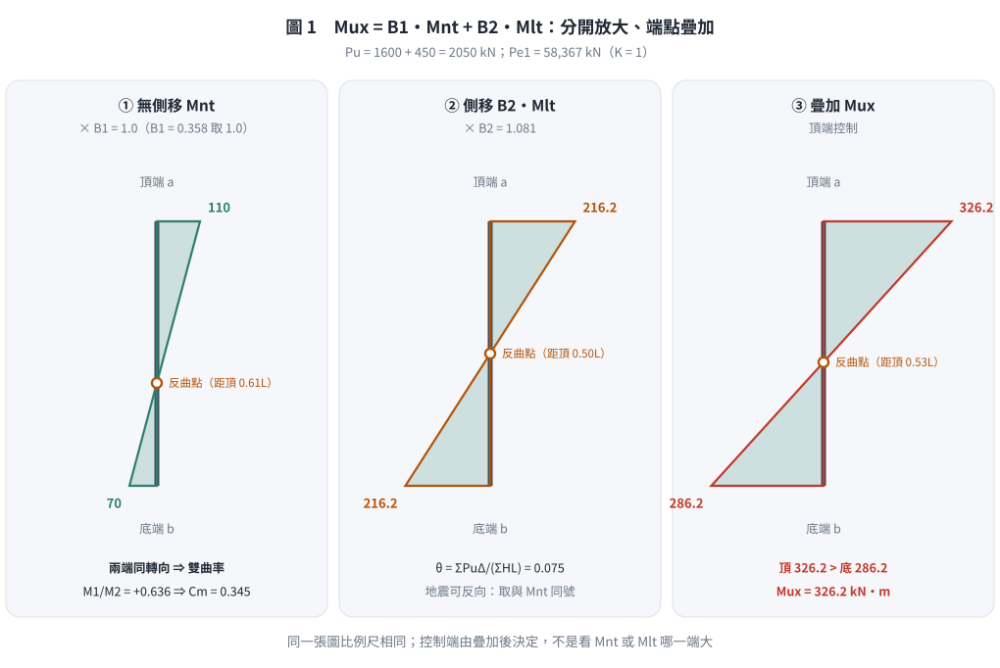
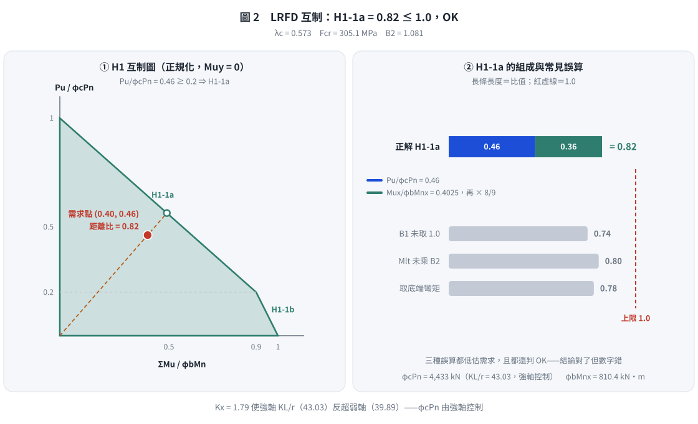

📄 題目正本：考卷原文・附圖・判讀清單（待確認）
SS-2014-4 題目正本
本檔只記錄考卷上寫了什麼、圖上畫了什麼，不含任何解法。解析見同資料夾
SS-2014-4.md。
判讀清單經使用者確認前，狀態為「待確認」；確認後本檔原則上不再修改（改動須回考卷原圖並記 log）。
| 項目 | 內容 |
|---|---|
| 考卷 | raw/exams/SS-2014_鋼結構設計.pdf 第 2 頁（全一張・背面），第四題 |
| 考年 | 民國 103 年（2014） |
| 配分 | 25 分 |
| 附圖 | 1 張（柱端力與端彎矩示意），SS-2014-4-fig-1.jpg；分析結果表照錄於 §1；題內公式截圖 SS-2014-4-eqn-1.png |
| 判讀狀態 | 待確認（轉錄 2026-11-02，PyMuPDF 110 dpi 全頁＋附圖 900 dpi 局部目視（向量圖）＋PDF 向量路徑核對，盲讀後才比對既有解析） |
1. 考卷原文（逐字）
四、有一鋼造斜撐構架系統，經過載重組合分析後得到下表鋼柱在強軸載重分析（含載重係數效應）的結果如圖所示，請檢核 W14×90（滿足結實斷面，鋼材 ASTM A572 Grade 50）之鋼柱是否可滿足 AISC-LRFD 設計要求。此鋼柱長 3.75 m(<$L_p$)，$K_x$=1.79，$K_y$=1.0，此柱上及下端均有側向支撐，所在樓層最大垂直載重（含載重係數效應）為 9000 kN，側力 600 kN，相對應的側位移角為 5/1000。（25 分）
分析 $P_u$（kN） $M_a$（kN-m） $M_b$（kN-m） 垂直力分析（1.2D+0.5L） 1600 110 70 側力（地震力）分析（1.0E） 450 200 200 柱 W14×90 型鋼性質如下：
$F_y$=350 MPa, $E$=200 GPa, $Z_x$=2572769 mm³, $I_x$=415815194 mm⁴, $A$=17097 mm², $r_x$=156 mm, $r_y$=94 mm公式：（見 §2）
2. 考卷給的公式、附表與參數
- 題文：柱長 3.75 m（< $L_p$）；$K_x$ = 1.79、$K_y$ = 1.0；樓層 $\Sigma P_u$ = 9000 kN、側力 600 kN、側位移角 5/1000；分析表（§1）；斷面性質。
- 題內「公式」照錄：
$$\frac{P_u}{2\phi P_n} + \left(\frac{M_{ux}}{\phi M_{nx}} + \frac{M_{uy}}{\phi M_{ny}}\right),\ P_u < 0.2\phi P_n$$
$$\frac{P_u}{\phi P_n} + \frac89\left(\frac{M_{ux}}{\phi M_{nx}} + \frac{M_{uy}}{\phi M_{ny}}\right),\ P_u \ge 0.2\phi P_n$$
$$B_1 = \frac{C_m}{1 - (P_u/P_e)},\qquad B_2 = \frac{1}{1 - (\sum P_u\Delta/\sum HL)}$$

- 交互式沒有寫「≤ 1.0」；沒有給 $\phi$、$C_m$ 式、$P_e$ 式、$F_{cr}$ 式。
- 卷首注意事項：可以使用電子計算器；不必抄題。
3. 附圖

圖面文字照錄：Pu；Ma；Mb；Pu。
4. 判讀清單
「把握」標不確定者請優先確認；解讀類項目（題目用字的意思）另標「解讀」。
| # | 項目 | 判讀 | 圖上／題文依據 | 把握 |
|---|---|---|---|---|
| 1 | 端彎矩轉向 | $M_a$、$M_b$ 同為順時針 → 反向（雙）曲率；兩組分析共用此圖，表列值皆為正 → 兩組皆雙曲率 | 900 dpi＋向量路徑：上弧箭頭在右（x≈113.6 pt）朝下、下弧箭頭在左（x≈103.2 pt）朝上 | 確定 |
| 2 | 彎矩軸 | 只有強軸彎矩，$M_{uy}$ = 0 | 題文「強軸載重分析」 | 確定 |
| 3 | $M_{nt}$／$M_{lt}$ | 垂直力分析 → $M_{nt}$、$P_{nt}$；側力分析 → $M_{lt}$、$P_{lt}$ | 表頭「垂直力分析／側力（地震力）分析」 | 確定（解讀） |
| 4 | $B_2$ 資料 | $\Sigma P_u$ = 9000 kN、$\Sigma H$ = 600 kN、$\Delta/L$ = 5/1000 | 題文 | 確定 |
| 5 | 撓曲強度 | 柱長 3.75 m < $L_p$、結實斷面 → 無 LTB 折減（題已明示） | 題文 | 確定 |
| 6 | 構架型式 | 題文寫「斜撐構架」，卻給 $K_x$ = 1.79、側力分析與 $B_2$ 資料，兩者不一致；照題給資料計算 | 題文 | 不確定（解讀） |
| 7 | 有效長度 | $K_xL$ = 1.79×3.75 m、$K_yL$ = 3.75 m | 題文 | 確定 |
轉錄：2026-11-02（SS-U1-3 題目正本推廣・批 2）
考題編號：SS-2014-4
主分類： SS-U1-3 梁柱桿件
副分類： 無
設計法： LRFD
標籤： 梁柱桿件 P-M互制 B1放大法 B2放大法 二階效應 斜撐構架 地震力組合 非側移框架 容量設計
1. 原始題目重述 (Problem Restatement)
有一鋼造斜撐構架系統，W14×90（結實斷面，ASTM A572 Grade 50）之鋼柱，請以 AISC-LRFD 檢核是否滿足設計要求。（25分）
柱 W14×90 性質：
| 項目 | 數值 |
|---|---|
| $F_y$ | 350 MPa |
| $E$ | 200 GPa |
| $Z_x$ | $2{,}572{,}769 \text{ mm}^3$ |
| $I_x$ | $415{,}815{,}194 \text{ mm}^4$ |
| $A$ | $17{,}097 \text{ mm}^2$ |
| $r_x$ | 156 mm |
| $r_y$ | 94 mm |
| 柱長 $L$ | 3.75 m（< $L_p$，無 LTB） |
| $K_x$ | 1.79（強軸） |
| $K_y$ | 1.0（弱軸） |
| 上下端 | 均有側向支撐 |
載重分析結果（含載重係數效應）：
| 分析工況 | $P_u$ (kN) | $M_a$ (kN-m) | $M_b$ (kN-m) |
|---|---|---|---|
| 垂直力分析（1.2D+0.5L） | 1600 | 110 | 70 |
| 側力（地震力）分析（1.0E） | 450 | 200 | 200 |
樓層參數（供 B2 計算）：
- $\sum P_u = 9000$ kN（所在樓層最大垂直載重，含載重係數）
- $H = 600$ kN（側力）
- $\Delta/L = 5/1000$（側位移角）
互制公式：
$$\frac{P_u}{\phi_c P_n} + \frac{8}{9}\left(\frac{M_{ux}}{\phi_b M_{nx}} + \frac{M_{uy}}{\phi_b M_{ny}}\right) \leq 1.0 \quad , \quad P_u \geq 0.2\phi_c P_n$$
$$\frac{P_u}{2\phi_c P_n} + \left(\frac{M_{ux}}{\phi_b M_{nx}} + \frac{M_{uy}}{\phi_b M_{ny}}\right) \leq 1.0 \quad , \quad P_u < 0.2\phi_c P_n$$
$$B_1 = \frac{C_m}{1 - P_u/P_e} \quad , \quad B_2 = \frac{1}{1 - \sum P_u \Delta / \sum HL}$$
2. 考題核心精神與出題者意圖 (Core Concepts & Examiner's Intent)
核心觀念：
- B1/B2 放大法（二階效應）：B1 處理 P-δ 效應（構件本身的撓曲），B2 處理 P-Δ 效應（樓層的側向位移）
- 載重組合的力流：垂直力產生 Mnt（非側移彎矩），地震力產生 Mlt（側移彎矩），兩者疊加後再放大
- P-M 互制：軸壓 + 彎矩的複合受力，需判斷哪個互制方程式
出題意圖：
1. 測試 B1 × Mnt + B2 × Mlt 的分離計算邏輯
2. 測試 Pe、Cm 的推導，以及 B1、B2 對結果的影響
3. 測試 P-M 互制的正確流程（先算 φcPn，再判斷公式）
陷阱：
- ⚠️ B2 用樓層總垂直載重（ΣPu=9000），不是本柱的 Pu
- ⚠️ Pe 的 K 值：B1 計算中的 Pe 用非側移條件（K=1.0），不是 Kx=1.79
- ⚠️ 載重組合：垂直+地震的組合為 1.2D+0.5L+1.0E
3. 解題戰略地圖與陷阱分析 (Strategic Roadmap & Trap Analysis)
作戰計畫：
Step 1：組合設計載重（垂直 + 地震）
Step 2：計算 B2（P-Δ 效應，用樓層參數）
Step 3：計算 B1（P-δ 效應）
├─ Cm 計算（非側移端彎矩比）
└─ Pe 計算（K=1 用於 B1）
Step 4：放大後設計彎矩 Mux = B1×Mnt + B2×Mlt
Step 5：計算 φcPn（軸壓強度）
├─ 計算控制細長比（強/弱軸取較大）
└─ 計算 λc → Fcr → Pn
Step 6：計算 φbMnx（無 LTB，直接取 Mp）
Step 7：P-M 互制公式檢核
3.5 變數層次分析（Variable Hierarchy Analysis）
複習提示：解題後，在每個卡住的知識點「卡關?」欄標記
⚠；第二次複習時只看有⚠的項目。
最終目標： 組合設計載重 → B2（P-Δ）與 B1（P-δ）→ 放大後設計彎矩 Mux → φcPn、φbMnx → P-M 互制檢核
主要公式（$\boxed{\phantom{x}}$ = 未知，待推導）
$$\boxed{B_2} = \frac{1}{1 - \dfrac{\sum P_u \cdot \Delta}{\sum H \cdot L}}$$
$$\boxed{B_1} = \frac{C_m}{1 - P_u / \boxed{P_e}} \geq 1.0$$
$$\boxed{M_{ux}} = B_1 \times M_{nt} + \boxed{B_2} \times M_{lt}$$
$$\boxed{\phi_c P_n} = 0.85 \times \boxed{F_{cr}} \times A, \quad \boxed{F_{cr}} = 0.658^{\lambda_c^2} F_y$$
$$\frac{P_u}{\boxed{\phi_c P_n}} + \frac{8}{9} \cdot \frac{\boxed{M_{ux}}}{\boxed{\phi_b M_{nx}}} \leq 1.0$$
L1：題目直接給定
| 符號 | 數值 | 說明 |
|---|---|---|
| $F_y$ | 350 MPa | 降伏應力（A572 Gr.50） |
| $E$ | 200,000 MPa | 彈性模數 |
| $A$ | 17,097 mm² | W14×90 斷面積 |
| $r_x$ | 156 mm | 強軸迴旋半徑 |
| $r_y$ | 94 mm | 弱軸迴旋半徑 |
| $I_x$ | 415,815,194 mm⁴ | 強軸慣性矩 |
| $Z_x$ | 2,572,769 mm³ | 強軸塑性模量 |
| $L$ | 3,750 mm | 柱長 |
| $K_x$ | 1.79 | 強軸有效長度係數 |
| $K_y$ | 1.0 | 弱軸有效長度係數 |
| $P_u$（垂直） | 1,600 kN | 1.2D+0.5L 工況 |
| $P_u$（地震） | 450 kN | 1.0E 工況 |
| $M_{nt,a}$ | 110 kN-m | 非側移彎矩（頂端） |
| $M_{nt,b}$ | 70 kN-m | 非側移彎矩（底端） |
| $M_{lt}$ | 200 kN-m | 側移彎矩（地震，頂底相等） |
| $\sum P_u$ | 9,000 kN | 樓層總垂直載重 |
| $\sum H$ | 600 kN | 樓層側力 |
| $\Delta/L$ | 5/1000 | 側位移角 |
L2：需知識點推導
Step 1：組合設計載重
| 符號 | 公式 / 來源 | 卡關? |
|---|---|---|
| $P_u$ | $1600 + 450 = 2050$ kN | |
| $\Delta$ | $5/1000 \times 3750 = 18.75$ mm |
Step 2：B2（P-Δ 效應）
| 符號 | 公式 / 來源 | 卡關? |
|---|---|---|
| $\sum P_u \Delta / \sum HL$ | $9000 \times 18.75 / (600 \times 3750) = 0.075$ | |
| $B_2$ | $1/(1-0.075) = 1.081$ |
Step 3：B1（P-δ 效應）
| 符號 | 公式 / 來源 | 卡關? |
|---|---|---|
| $P_e$ | $\pi^2 E I_x / L^2$（K=1 for B1）= 58,366 kN | |
| $C_m$ | $0.6 - 0.4(M_1/M_2)$；圖示兩端彎矩同為順時針 → 雙曲率，$M_1/M_2 = +70/110$ → $C_m$ = 0.345 | |
| $B_1$ | $C_m / (1 - P_u/P_e) = 0.358 < 1.0$ → 取 1.0 |
Step 4：放大後設計彎矩
| 符號 | 公式 / 來源 | 卡關? |
|---|---|---|
| $M_{ux,a}$ | $1.0 \times 110 + 1.081 \times 200 = 326.2$ kN-m | |
| $M_{ux,b}$ | $1.0 \times 70 + 1.081 \times 200 = 286.2$ kN-m | |
| $M_{ux}$ | 取較大值 = 326.2 kN-m（頂端控制） |
Step 5：柱軸壓強度
| 符號 | 公式 / 來源 | 卡關? |
|---|---|---|
| $(KL/r)_x$ | $1.79 \times 3750/156 = 43.03$（強軸控制） | |
| $(KL/r)_y$ | $1.0 \times 3750/94 = 39.89$ | |
| $\lambda_c$ | $(KL/r)/\pi \cdot \sqrt{F_y/E} = 0.573$ | |
| $F_{cr}$ | $0.658^{0.573^2} \times 350 = 305.0$ MPa | |
| $\phi_c P_n$ | $0.85 \times 305.0 \times 17097 = 4433$ kN |
Step 6：彎矩強度
| 符號 | 公式 / 來源 | 卡關? |
|---|---|---|
| $M_p$ | $F_y Z_x = 350 \times 2{,}572{,}769 = 900.5$ kN-m | |
| $\phi_b M_{nx}$ | $0.9 \times 900.5 = 810.4$ kN-m（$L_b < L_p$，無 LTB） |
Step 7：P-M 互制
| 符號 | 公式 / 來源 | 卡關? |
|---|---|---|
| $P_u / \phi_c P_n$ | $2050/4433 = 0.463 \geq 0.2$ → 用公式 H1-1a | |
| 互制比 | $0.463 + 8/9 \times (326.2/810.4) = 0.821 \leq 1.0$ ✓ |
L3：深層知識（不懂就卡住）
| 知識點 | 說明 | 卡關? |
|---|---|---|
| B1 的 Pe 用 K=1（非側移） | B1 矯正構件 P-δ，Pe 用 K=1；B2 矯正樓層 P-Δ，用樓層參數 | |
| B2 用樓層總 ΣPu | B2 分母是整層柱的 ΣPu（9000 kN），不是本柱的 Pu | |
| Cm 的正負號與曲率方向 | 由圖判讀端彎矩轉向：兩端同轉向（同為順時針）＝雙曲率，M1/M2 > 0 → Cm 較小；兩端反轉向＝單曲率，M1/M2 < 0 | |
| LRFD 柱強度 λc 公式 | $\lambda_c < 1.5$：$F_{cr} = 0.658^{\lambda_c^2}F_y$；$\geq 1.5$：$0.877/\lambda_c^2 \cdot F_y$ | |
| P-M 互制判斷門檻 | $P_u/\phi_cP_n \geq 0.2$ 用 H1-1a；$< 0.2$ 用 H1-1b | |
| B1 下限取 1.0 | 計算 $B_1 < 1.0$ 時，規範規定取 1.0，不可折減 |
4. 步驟化詳細計算過程 (Step-by-Step Detailed Calculation)
Step 1：組合設計載重
LRFD 載重組合：1.2D + 0.5L + 1.0E
| 項目 | 1.2D+0.5L | 1.0E | 組合 |
|---|---|---|---|
| $P_u$ | 1600 kN | 450 kN | 2050 kN |
| $M_a$（頂端） | 110 kN-m | 200 kN-m | （見Step 4） |
| $M_b$（底端） | 70 kN-m | 200 kN-m | （見Step 4） |
策略註解：Mnt（非側移彎矩）= 110/70（垂直力），Mlt（側移彎矩）= 200/200（地震力），分開處理再疊加。
Step 2：計算 B2（考慮 P-Δ 效應）
$$B_2 = \frac{1}{1 - \dfrac{\sum P_u \cdot \Delta}{\sum H \cdot L}}$$
各參數：
- $\sum P_u = 9000$ kN（樓層總垂直載重）
- $\Delta = \frac{5}{1000} \times L = \frac{5}{1000} \times 3750 = 18.75$ mm
- $\sum H = 600$ kN（樓層側力）
- $L = 3750$ mm（層高）
$$\frac{\sum P_u \cdot \Delta}{\sum H \cdot L} = \frac{9000 \times 18.75}{600 \times 3750} = \frac{168{,}750}{2{,}250{,}000} = 0.075$$
$$\boxed{B_2 = \frac{1}{1 - 0.075} = \frac{1}{0.925} = 1.081}$$
策略註解：穩定係數 θ = 0.075 < 0.1（AISC 建議），屬合理範圍。B2 = 1.081 表示地震彎矩放大 8.1%。
Step 3：計算 B1（考慮 P-δ 效應）
3a. 計算 Pe（非側移條件，K=1.0 for B1）
$$P_e = \frac{\pi^2 E I_x}{L^2} = \frac{\pi^2 \times 200{,}000 \text{ N/mm}^2 \times 415{,}815{,}194 \text{ mm}^4}{(3750 \text{ mm})^2}$$
$$= \frac{9.8696 \times 200{,}000 \times 415{,}815{,}194}{14{,}062{,}500} = \frac{8.208 \times 10^{14}}{14{,}062{,}500} = 58{,}366 \text{ kN}$$
策略註解：B1 中的 Pe 使用 K=1（非側移條件），因為 P-δ 效應是針對構件自身撓曲，不涉及整體側移。
3b. 計算 Cm（非側移端彎矩）
垂直力（非側移）下：$M_{nt,a} = 110$ kN-m（頂），$M_{nt,b} = 70$ kN-m（底）
$M_1/M_2$ 雙曲率取正、單曲率取負。題目附圖頂端 $M_a$、底端 $M_b$ 的箭頭皆為順時針——構材兩端端彎矩同轉向，表示雙曲率（反曲點在柱中段），故 $M_1/M_2 = +70/110$：
$$C_m = 0.6 - 0.4 \left(\frac{M_1}{M_2}\right) = 0.6 - 0.4 \times \frac{70}{110} = 0.6 - 0.255 = 0.345$$
策略註解：曲率由圖上端彎矩的轉向判讀，不需另做保守假設。若誤判為單曲率，$C_m = 0.6 + 0.4 \times 70/110 = 0.855$、$B_1 = 0.886$，同樣取 1.0，本題結果不受影響。
3c. 計算 B1
$$B_1 = \frac{C_m}{1 - P_u / P_e} = \frac{0.345}{1 - 2050/58{,}366} = \frac{0.345}{1 - 0.0351} = \frac{0.345}{0.965} = 0.358$$
由於 $B_1 = 0.358 < 1.0$，取 $B_1 = 1.0$（規範規定最小值為 1.0）
策略註解：因為 Pe >> Pu（$P_u/P_e = 3.5\%$），B1 效應很小，非側移彎矩幾乎不放大。
Step 4：計算放大後設計彎矩 Mux
$$M_{ux} = B_1 \times M_{nt} + B_2 \times M_{lt}$$
頂端（Ma 側）：
$$M_{ux,a} = 1.0 \times 110 + 1.081 \times 200 = 110 + 216.2 = 326.2 \text{ kN-m}$$
底端（Mb 側）：
$$M_{ux,b} = 1.0 \times 70 + 1.081 \times 200 = 70 + 216.2 = 286.2 \text{ kN-m}$$
設計用彎矩取較大值：
$$\boxed{M_{ux} = 326.2 \text{ kN-m（頂端控制）}}$$
策略註解：地震力使上下端彎矩相等（各200），疊加垂直力彎矩後，頂端（110+216.2）比底端（70+216.2）大。

圖 1 $M_{nt}$ 乘 $B_1$、$M_{lt}$ 乘 $B_2$ 之後在兩端疊加，頂端 326.2 大於底端 286.2。這張圖攔的是先把 $M_{nt}+M_{lt}$ 相加再一起放大、控制端取錯，以及把雙曲率判成單曲率。
Step 5：計算柱軸壓強度 $\phi_c P_n$
5a. 計算控制細長比
| 方向 | $K$ | $KL/r$ |
|---|---|---|
| 強軸（x） | 1.79 | $1.79 \times 3750 / 156 = \mathbf{43.03}$ |
| 弱軸（y） | 1.0 | $1.0 \times 3750 / 94 = 39.89$ |
強軸控制：$(KL/r)_{gov} = 43.03$
5b. 計算 $\lambda_c$
$$\lambda_c = \frac{KL/r}{\pi} \sqrt{\frac{F_y}{E}} = \frac{43.03}{\pi} \times \sqrt{\frac{350}{200{,}000}}$$
$$= \frac{43.03}{3.1416} \times \sqrt{0.00175} = 13.694 \times 0.04183 = 0.573$$
5c. 計算 Fcr
$\lambda_c = 0.573 < 1.5$ → 非彈性挫屈：
$$F_{cr} = 0.658^{\lambda_c^2} \times F_y = 0.658^{0.573^2} \times 350 = 0.658^{0.328} \times 350$$
$$0.658^{0.328} = e^{0.328 \times \ln 0.658} = e^{0.328 \times (-0.4193)} = e^{-0.1375} = 0.8715$$
$$F_{cr} = 0.8715 \times 350 = \mathbf{305.0 \text{ MPa}}$$
5d. 計算 Pn 與 φcPn
$$P_n = F_{cr} \times A = 305.0 \times 17{,}097 = 5{,}214{,}585 \text{ N} = 5215 \text{ kN}$$
$$\boxed{\phi_c P_n = 0.85 \times 5215 = \mathbf{4433 \text{ kN}}}$$
Step 6：計算彎矩強度 $\phi_b M_{nx}$
斷面結實性： 題目已確認（結實斷面）
LTB 檢核： 題目給定 $L = 3.75$ m < $L_p$，無 LTB，可達全塑性：
$$M_{nx} = M_p = F_y Z_x = 350 \times 2{,}572{,}769 = 900{,}469{,}150 \text{ N-mm} = 900.5 \text{ kN-m}$$
$$\boxed{\phi_b M_{nx} = 0.9 \times 900.5 = \mathbf{810.4 \text{ kN-m}}}$$
Step 7：P-M 互制公式檢核
判斷互制公式：
$$\frac{P_u}{\phi_c P_n} = \frac{2050}{4433} = 0.463 \geq 0.2 \quad \Rightarrow \quad \text{用公式 (1)}$$
公式 (1)：
$$\frac{P_u}{\phi_c P_n} + \frac{8}{9}\left(\frac{M_{ux}}{\phi_b M_{nx}} + \frac{M_{uy}}{\phi_b M_{ny}}\right) \leq 1.0$$
本題弱軸彎矩 $M_{uy} = 0$（未給出弱軸彎矩）：
$$0.463 + \frac{8}{9} \times \left(\frac{326.2}{810.4} + 0\right) = 0.463 + \frac{8}{9} \times 0.4025$$
$$= 0.463 + 0.889 \times 0.4025 = 0.463 + 0.358 = \boxed{0.821}$$
$$0.821 \leq 1.0 \quad \Rightarrow \quad \textbf{✅ W14×90 柱滿足 AISC-LRFD 設計要求}$$

圖 2 H1 互制圖與三種常見誤算。$B_1$ 未取 1.0、$M_{lt}$ 未乘 $B_2$、取底端彎矩都會低估需求，而且仍判 OK——這張圖攔的是「結論對了、數字錯」。
計算成果彙整
| 計算項目 | 數值 | 說明 |
|---|---|---|
| $B_2$ | 1.081 | P-Δ 效應放大係數（8.1%放大） |
| $B_1$ | 1.0（取下限） | P-δ 效應可忽略（Pe >> Pu） |
| $M_{ux}$（放大後） | 326.2 kN-m | B1×Mnt + B2×Mlt（頂端控制） |
| $P_u$ | 2050 kN | 1.2D+0.5L+1.0E 組合 |
| $(KL/r)_{gov}$ | 43.03（強軸） | |
| $\lambda_c$ | 0.573 | 非彈性挫屈範圍 |
| $F_{cr}$ | 305.0 MPa | |
| $\phi_c P_n$ | 4433 kN | 設計軸壓強度 |
| $\phi_b M_{nx}$ | 810.4 kN-m | 無LTB，取全塑性 |
| P-M 互制比 | 0.821 | ≤ 1.0，通過 |
$$\boxed{\text{W14×90 柱：P-M 互制比 = 0.821 ≤ 1.0，滿足 AISC-LRFD 設計要求}}$$
5. 關鍵爭議點與進階探討 (Critical Issues & Advanced Discussion)
①B1 中 Pe 的 K 值選取：
計算 B1 用的 Pe 應使用 K=1.0（非側移狀態），因為 B1 矯正的是「無側移時因軸力產生的彎矩放大（P-δ效應）」，而非整體側移（P-Δ效應，由 B2 處理）。若誤用 Kx=1.79，會低估 Pe，高估 B1 放大，偏保守但不正確。
②地震力彎矩的方向問題：
題目附圖已畫出端彎矩方向：頂端 $M_a$、底端 $M_b$ 皆為順時針，構材兩端同轉向即雙曲率（$M_1/M_2 > 0$、$C_m = 0.345$）。原解未依圖判讀而「假設單曲率（保守）」得 $C_m = 0.855$，觀念上不正確；但兩者算得的 $B_1$（0.358／0.886）都小於 1.0、皆取 1.0，本題 $M_{ux}$ 與互制比不受影響。地震側力造成的 $M_{lt}$ 在斜撐構架中屬側移彎矩，以 $B_2$ 放大，不參與 $C_m$ 判斷。
③B2 > 1.20 時的警示：
若穩定係數 θ = ΣPuΔ/(ΣHL) > 0.3，表示結構側向穩定性不足，AISC 規範建議以剛性設計（增加剛度）改善，B2 方法不再適用。本題 θ = 0.075，遠在安全範圍內。
④斜撐構架 vs 抗彎框架的設計差異：
斜撐構架（Braced Frame）的側向剛度主要由斜撐提供，柱承受的 Mlt 相對較小；抗彎框架（Moment Frame）的柱 Mlt 大，B2 效應更顯著。本題為斜撐構架，柱的彎矩需求主要來自垂直力，地震彎矩是次要。
⑤Kx = 1.79 的來源（AISC 對齊圖法）：
$K_x = 1.79$ 通常對應於柱上端受梁約束（部分固接）、下端固接於基礎的情況，從 AISC 對齊圖（alignment chart）讀取。有效長度 $K_x L = 1.79 \times 3.75 = 6.71$ m 相當大，暗示柱腳接近固接但柱頂梁的束制相對較弱。
6. 依最新規範（AISC 360-16／-22）對照
| 項目 | 考卷（AISC-LRFD 1993／1999 系） | AISC 360-16／-22（附錄 8 近似二階分析） |
|---|---|---|
| 柱強度 | $\lambda_c$ 式，$\phi_c = 0.85$ | $F_e = \pi^2E/(KL/r)^2$、$F_{cr} = 0.658^{F_y/F_e}F_y$，$\phi_c = 0.90$ |
| $C_m$ | $0.6 - 0.4(M_1/M_2)$，雙曲率取正 | 同式（無橫向載重時） |
| $B_1$ | $C_m/(1 - P_u/P_e) \geq 1.0$ | $C_m/(1 - \alpha P_r/P_{e1}) \geq 1.0$，$\alpha = 1.0$（LRFD） |
| $B_2$ | $1/(1 - \Sigma P_u\Delta/\Sigma HL)$ | $1/(1 - \alpha P_{story}/P_{e,story})$，$P_{e,story} = R_M HL/\Delta_H$，斜撐構架 $R_M = 1.0$ |
| 互制式 | H1-1a／b | 同 |
本題以 360-16 估算： $KL/r = 43.03$ → $F_e = 1066$ MPa、$F_{cr} = 305.1$ MPa → $\phi_cP_n = 0.9 \times 305.1 \times 17{,}097 = 4694$ kN，$P_u/\phi_cP_n = 0.437$；$P_{e,story} = 600/0.005 = 120{,}000$ kN → $B_2 = 1/(1 - 9000/120{,}000) = 1.081$（與考卷式相同）；$B_1$ 仍取 1.0，$M_{ux} = 326.2$ kN-m；互制比 $= 0.437 + \tfrac{8}{9}\times 326.2/810.4 = 0.795 \leq 1.0$ OK（考卷版 0.821）。差異來自 $\phi_c$ 由 0.85 提高為 0.90。
修正日期：2026-11-01（依考卷原圖：頂端 $M_a$、底端 $M_b$ 箭頭皆為順時針，構材兩端同轉向為雙曲率；原解未依圖判讀而假設單曲率（保守）取 $C_m = 0.855$，更正為 $C_m = 0.6 - 0.4 \times 70/110 = 0.345$、$B_1 = 0.358$，仍取 1.0，$M_{ux} = 326.2$ kN-m 與互制比 0.821 不變，結論 OK 不變；新增 §6 對照）
圖解補繪：2026-11-03（向量圖 2 張，腳本 gen_SS-2014-4.py，改輸入可原地重跑；SVG 供 wiki／PDF，2× PNG 供 pptx／影片）
驗證狀態：unverified